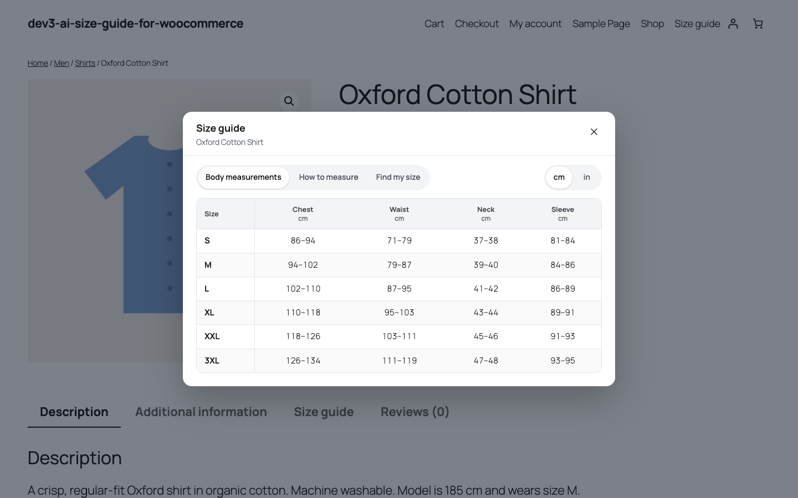
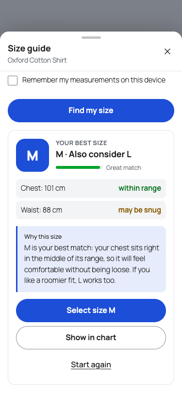
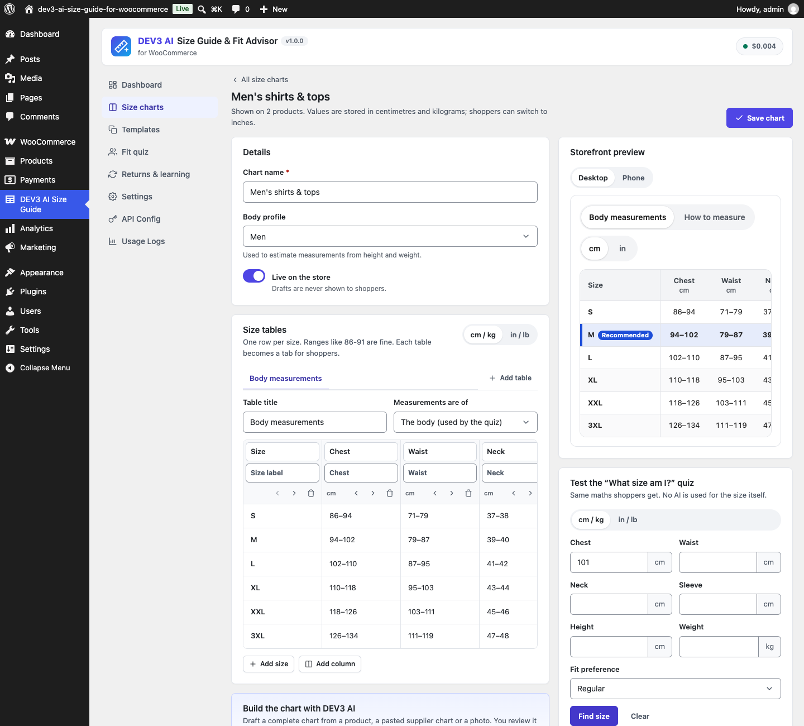

1. Installation
- Requirements: WordPress 6.0+, PHP 7.4+ (tested on 8.3), WooCommerce 8.0+.
- Plugins → Add New → Upload Plugin → choose
dev3-ai-size-guide-for-woocommerce.zip→ Install → Activate. - Open DEV3 AI Size Guide in the admin menu. No licence key or activation is needed.
- Go to Templates, pick a template (or Size charts → New chart), then set Where it shows and click Save chart.
The plugin declares compatibility with WooCommerce High-Performance Order Storage (HPOS) and the Cart & Checkout blocks.
2. Google Gemini API key (optional)
- Create a key at Google AI Studio.
- Paste it under API Config and click Save (it is stored encrypted). You can also define
DEV3SG_GEMINI_API_KEYinwp-config.php. - Pick models (default
gemini-2.5-flash), set a monthly budget, and decide whether storefront AI (quiz explanations) is allowed.
Everything except the DEV3 AI buttons works without a key. Usage and estimated cost appear under Usage Logs.
3. Size charts
Editor
- Tables: a chart can have up to 6 tables (e.g. Body measurements, Garment measurements, International sizes). Each table becomes a tab for shoppers.
- Columns: choose the type per column: Size label, Text / other size system (US, UK, EU…) or a Measurement (chest, bust, under-bust, waist, hips, inseam, height, weight, foot length/width, neck, sleeve, shoulder, thigh, head, hand, finger circumference, length, width, custom).
- Values: one row per size; numbers or ranges (
86-91). Switch the editor to in / lb to type imperial values; everything is stored in cm / kg. - Measurements are of the body (used by the quiz) or the garment (shown only).
- How to measure: one step per line (
Chest: measure around…shows "Chest" in bold) and an optional image from the media library. - Fit note shown to shoppers, and the quiz adjustment (±1 or ±2 sizes) learned from returns.
- Live / Draft: drafts are never shown on the store.
- The right column shows a live storefront preview (desktop / phone) and a quiz simulator that runs on unsaved changes.
Templates
Women's tops, women's dresses, women's bottoms, men's tops & shirts, men's bottoms & jeans, unisex T-shirts (body + garment), women's shoes, men's shoes, kids' clothing, bras, rings and hats. Developers can add more with the dev3sg_templates filter.
Paste import (no AI)
In the editor's DEV3 AI card choose Paste a chart and click Read table (no AI). Tab, semicolon, comma, pipe or two-space separated tables are read; column types are guessed from headers and inch values are detected and converted.
Assignment
Order of precedence for a product: the product's own override (Size guide box on the product edit screen: Automatic, No size guide, or a chart) → charts listing the product → charts matching a product tag → charts matching a category → charts matching a parent category. Within one level the higher Priority wins, then the newest chart. Excluded products are skipped. The Dashboard lists products without a size guide with a quick Assign button.
4. Storefront display
| Setting | Options |
|---|---|
| Show the size guide as | Popup button and product tab (default), popup only, tab only |
| Button position | After the add-to-cart button, before the add-to-cart form, after the price, after the product summary, nowhere (use shortcode/block) |
| Texts | Size guide button, quiz button and tab title (empty = translated default) |
| Default unit | Automatic (inches in the US, Liberia and Myanmar), centimetres, inches. Shoppers can switch; the choice is remembered on their device. |
| Accent colour | Buttons, highlights and the recommended size |
| Size attribute names | Default pa_size, size. Used for "Select this size", units sold per size and return records. |
On phones the popup is a bottom sheet (drag the handle down, tap outside, press Escape or the close button). Tables scroll horizontally and vertically inside the sheet with a sticky header row and a sticky size column. Theme fonts are inherited; colours are CSS custom properties (--dev3sg-accent-color, --dev3sg-paper, --dev3sg-ink, --dev3sg-line, --dev3sg-tint).
5. "What size am I?" quiz
- Asks for the body measurements your chart uses (only columns that differ between sizes), optional height and weight, the size usually worn in another system, and a fit preference (snug / regular / relaxed).
- The size is calculated with plain maths: distance of each measurement outside each size range, weighted by importance; relaxed adds ease, snug removes it; the chart's learned adjustment moves the result.
- Missing chest/waist/hips can be estimated from height and weight per body profile (marked "estimated").
- The result shows the size, an alternative when between sizes, a confidence meter, per-measure verdicts, the recommended row highlighted in the table and Select size, which picks the option in the variation dropdown.
- With DEV3 AI on, a friendly explanation replaces the written one (cached per identical result; falls back to the written text when AI is off, capped or failing).
- Settings: Fit quiz screen (show quiz, fit preference, usual size, estimates, remember measurements, AI explanation).
6. Returns & learning
- Sources: WooCommerce refund reasons (per refunded line, with its size), the Fit feedback box on the order screen (HPOS and legacy), manual records, and the
dev3sg_record_returnaction for RMA plugins. - Classification: too small, too large, fit OK, other, unclear (keywords in English, German, French, Spanish and Dutch). Classify unclear notes runs a DEV3 AI background job; each suggestion waits for Accept / Reject.
- Insights: per chart and size: units sold, fit returns, fit-return rate and signal. When at least the minimum number of fit returns (default 5) point the same way (default 60%), a "Runs small / large" suggestion appears. Accepting sets the quiz adjustment and optionally a shopper fit note; only returns after that change count towards the next suggestion. Dismissed suggestions return when more returns arrive.
- Learning settings: look-back days, minimum sample, share and automatic refund capture.
7. DEV3 AI features
| Feature | Where | Sent to Gemini |
|---|---|---|
| Draft a chart from product data | Chart editor → Build the chart with DEV3 AI | Title, categories, short description, description, attributes |
| Read a pasted chart | Same card → Paste a chart | The pasted text |
| Read a photo or screenshot | Same card → Photo or screenshot (JPG/PNG/WebP up to 4 MB) | The image |
| Write the how-to-measure guide | Chart editor → How to measure | Chart name, profile, measure names |
| Explain my size | Storefront quiz | The size result only (no personal data) |
| Classify return notes | Returns & learning | Return notes (PII masked) |
| Summarise returns | Returns & learning → Summarise with DEV3 AI | Counts per size and up to 40 masked notes |
| Suggest assignments | Dashboard → Products without a size guide | Chart names and category names |
Every AI result is a draft: Use these tables, Add as extra tables, Accept, Regenerate or Reject. Nothing is saved until you accept and then save the chart.
8. Dashboard & analytics
Live charts, product coverage, guide opens, completed quizzes, quiz → add-to-cart rate and fit returns for 7/30/90 days; daily activity; top products; open fit suggestions. Only anonymous counts are stored (no measurements, no personal data). Analytics can be turned off in Settings.
9. Shortcodes & block
| Shortcode | Output |
|---|---|
[dev3sg_size_guide] | Buttons that open the popup for the current product. product_id="12" or id="chart id". |
[dev3sg_size_chart id="5"] | The chart inline with tabs and quiz. quiz="no" hides the quiz; product_id uses that product's chart. |
[dev3sg_fit_quiz product_id="12"] | Only the quiz. |
Block editor: Size Chart (WooCommerce category) with Chart, Show (inline / buttons / quiz) and Product ID options.
10. Hooks for developers
| Hook | Type | Purpose |
|---|---|---|
dev3sg_record_return( $product_id, $size, $reason_text, $args ) | action | Record a return from an RMA plugin. $args: order_id, item_id, reason. |
dev3sg_chart_saved( $id, $data ) | action | After a chart is saved. |
dev3sg_chart_for_product( $chart_id, $product_id ) | filter | Override the chart chosen for a product. |
dev3sg_templates( $templates ) | filter | Add or change templates. |
dev3sg_measures( $measures ) | filter | Measurement dictionary (labels, help, weights). |
dev3sg_estimates( $out, $height, $weight, $profile ) | filter | Height/weight estimate formulas. |
dev3sg_fit_result( $result, $chart, $input ) | filter | Change a quiz result. |
dev3sg_classifier_patterns( $patterns ) | filter | Return-reason keywords. |
dev3sg_public_rate_limit( $limit, $bucket ) | filter | Requests per minute per IP for fit / explain / track. |
dev3sg_prompt_{id}( $prompt ) | filter | Customise AI prompts: chart_from_product, chart_from_text, chart_from_image, write_guide, explain_fit, classify_returns, return_insights, suggest_assign. |
dev3sg_ai_guard, dev3sg_capability, dev3sg_manage_capability | filter | Block AI calls, change capabilities. |
REST API (/wp-json/dev3sg/v1/)
Admin (nonce + capability): charts, charts/<id>, charts/<id>/duplicate, templates, measures, parse, lookup, coverage, assign, assign/categories, stats, fit/test, returns, returns/<id>, returns/classify, returns/accept, insights, insights/apply, insights/dismiss, ai/chart, ai/guide, ai/insights, ai/assign. Public (same-origin, rate-limited, page-cache safe): fit/recommend, fit/explain, track.
11. FAQ
The buttons do not appear.
Check that the chart is Live, assigned to the product's category/tag/product, that the product override is not "No size guide", and (if enabled) that the product has a size attribute.
"Select size" does not pick the variation.
Add your attribute name (e.g. pa_shoe-size) under Settings → Size attribute names. Option names must match the chart's size labels.
Can I use it in a page builder?
Yes: use the shortcodes in any text or shortcode widget.
Does it slow down my store?
The storefront script is about 12 KB, loads only where a guide is shown and has no dependencies; the markup is rendered on the server.
Privacy
The plugin adds a privacy-policy snippet naming Google Gemini. Measurements are never stored on the server; quiz requests only send the numbers needed for the calculation.
12. Changelog
1.0.0 – Initial release.
Google Gemini is a trademark of Google LLC. This plugin is not affiliated with Google.